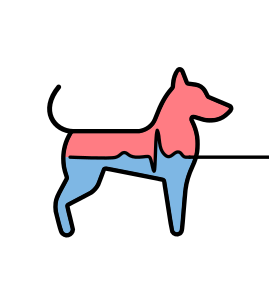
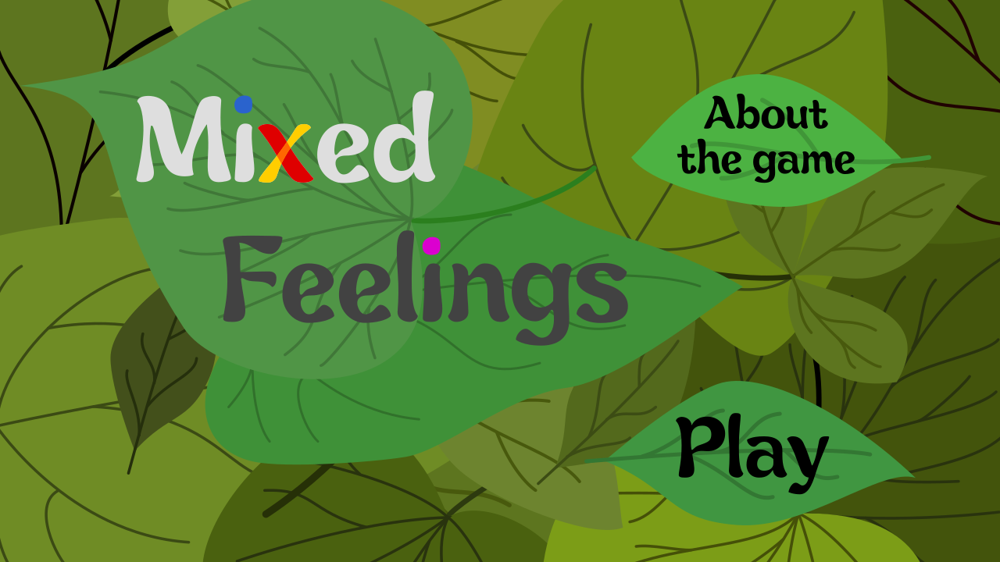

About Me
I am a PhD student at PQShield supervised by Thomas Prest, and co-supervised by Pierre-Alain Fouque, Université de Rennes 1.
I recently graduated from ENS Lyon, France and EPFL, Switzerland, and obtained a double Master of Computer Science.
I am majoring in Cybersecurity and Cryptography and I’m very much interested into all topics
related to privacy, applied cryptography and software security, ranging from analysing the security
of protocols, to writing efficient and secure software, or working on more theorical yet practical
cryptographic schemes.
Check my resume to learn more about my background.
Research Interests
- Cryptography: protocol design, cryptography engineering
- Cybersecurity: pen-testing, threat modelling
Publications
-
Thomas Espitau, Guilhem Niot, Thomas Prest
CRYPTO 2024
-
Muhammed F. Esgin, Thomas Espitau, Guilhem Niot, Thomas Prest, Amin Sakzad, Ron Steinfeld
EUROCRYPT 2024
-
Thomas Espitau, Guilhem Niot, Chao Sun and Mehdi Tibouchi
National Institute of Standards and Technology (NIST), Additional Digital Signature Schemes, 2023.
-
Rachid Guerraoui, Anne-Marie Kermarrec, Guilhem Niot, Olivier Ruas, François Taïani
IEEE/Transactions on Knowledge and Data Engineering (TKDE), 2022.
Awards
Talks
- Flood and Submerse: Distributed Key Generation and Robust Threshold Signature from Lattices - PDF
ENSL/CWI/KCL/IRISA joint crypto seminar (30/09/2024)
- Flood and Submerse: Distributed Key Generation and Robust Threshold Signature from Lattices - PDF
CRYPTO 2024 (19/08/2024)
- Plover: Masking-Friendly Hash-and-Sign Lattice Signature - PDF
EUROCRYPT 2024 (30/05/2024)
- Plover: Masking-Friendly Hash-and-Sign Lattice Signature - PDF
CAPSLOCK Seminar Rennes (05/04/2024)
- Squirrels: a post-quantum signature scheme based on plain lattices - PDF
Journées C2 (18/10/2023)
- Squirrels: a post-quantum signature scheme based on plain lattices - PDF
Master thesis defense (12/09/2023)
- Making KNN algorithms faster with GoldFinger, a Fast and Precise method for approximating Jaccard similarity - PDF
Master internship defense (08/2021)
- Intel SGX enclaves - PDF
Bachelor internship defense - French (08/2020)
Posters
- Squirrels: Unstructured Lattice Digital signature - PDF
NIST Fifth PQC Standardization Conference (04/2024)
Projects
-

Elise Postic, Guilhem Niot, Alexandre Variengien, Simon Dupouy, Théo Regny
-

Elise Postic, Guilhem Niot, Alexandre Variengien, Simon Dupouy, Théo Regny
-
-
Dolphin: a toy decentralized bill-sharing app. CRDTs for managing distributed data, and TreeKEM for
Group Key Management and key rotations.
-
Pingo: a π-calculus interpreter in G
-
-
Vice-president of AliENS, the IT association of ENS de Lyon (600 members) from 2020 until 2022.
Blog posts
- Blog post at PQShield, with Amin Sakzad: “Fighting side-channel attacks with our general toolkit: illustration with the Plover signature”. Find it here.
Reviewed for
I also took part in the peer-reviewing process of the following conferences: